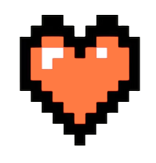
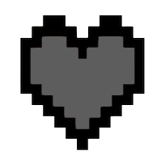

Tu mascota pixel arranca con corazones. Cada día que no corres, pierde uno. En cero, se apaga. 66 días para volverte alguien que corre —y 50 tarjetas que ganar por el camino.
Nada de barras raras ni porcentajes. Tu pacepal tiene corazones. Corre tu mínimo del día y el día cuenta. Fállale y pierdes uno. En cero, se apaga.


Hábito: 5 corazones · Resistencia: 3 · Rendimiento: 2
Corriste 10K, encadenaste 20 días, bajaste de 30 minutos en los 5K. En vez de una notificación que se olvida, te llevas una tarjeta con tu mascota, tu distancia, tu ritmo y la fecha exacta. Se queda en tu álbum para siempre.
Pasa el cursor o inclina el teléfono para ver el foil
Cada día que corres, tu compañero avanza por el tablero. Al día 66, el hábito ya es tuyo.
Nada de zonas de frecuencia ni splits. Desde 0.1 km ya cuenta: tu mascota celebra que saliste, no tu ritmo.
Tu pacepal te avisa antes de perder otro. Corre en la caminadora o afuera con GPS, o conecta Apple Health — de contar nos encargamos nosotros.
Al día 66 tu pacepal gana su medalla, tú un diploma y cae la tarjeta que cierra el álbum. Ya no corres por él — corres porque eres alguien que corre.
Nada de zonas de frecuencia ni splits. Desde 0.1 km ya cuenta: tu mascota celebra que saliste, no tu ritmo. La meta no es correr rápido, es no faltar.
Enlaza Apple Health y tus carreras se sincronizan solas. ¿Sin reloj? El GPS y el podómetro de tu iPhone miden por ti. Tú corre — de contar nos encargamos nosotros.
20 animales y 26 paletas con ADN generativo: la tuya es única. Cada hito del reto te deja una tarjeta nueva con su pose de celebración.
Tu pacepal te avisa antes de perder otro. Su humor y sus corazones viven en un widget en tu pantalla de inicio y en tu Apple Watch. Al día 66: medalla y diploma.
Has bajado mil apps de running. Te prometiste “desde el lunes”. Compraste tenis nuevos. Y aun así, el día sin ganas… no sales. No es falta de disciplina: es que los datos no motivan a quien apenas empieza.
Strava, Adidas y compañía son geniales —cuando ya corres—. Te miden ritmo, zonas y splits. Pero si estás empezando, esos números no te sacan de la cama.
Pacepal le da la vuelta. Adoptas una mascota pixel que depende de ti. Empieza con corazones; cada día que corres, vive y celebra contigo; cada día que faltas, pierde uno. En cero, se apaga. Así de simple.
Está construida sobre la ciencia de hábitos de James Clear: un sistema + una recompensa inmediata. Tu recompensa no es una gráfica — es ver a tu compañero vivo.
Son 66 días, lo que de verdad tarda en formarse un hábito. Al final ya no corres por la mascota. Corres porque te volviste alguien que corre.
Nada de métricas que abruman. Solo lo justo para que vuelvas mañana —y los próximos 65 días.
Hitos del reto, distancia en una salida, días seguidos, kilómetros acumulados y retos de ritmo. Cada casilla te dice qué correr para llenarla.
5K bajo 30 minutos, 10K dentro de la hora, ritmo 4:30/km, una hora entera en pie, media maratón sub 2:15. Diez peldaños para cuando ya no te basta con salir.
Corre con GPS y la ruta queda dibujada junto a la tarjeta que ganaste ese día. El recorrido exacto, no un número suelto.
Se respalda solo desde el primer día, sin pedirte nada. Vincula tu Apple ID y recupera corazones, días y colección si borras la app o cambias de teléfono.
Vacaciones o lesión: tu pacepal se duerme y deja de perder corazones. Vuelves y sigues justo donde lo dejaste, sin culpa y sin racha rota.
Sin muro de pago, sin anuncios y sin cuenta obligatoria. Todo lo que ves aquí —las 50 tarjetas incluidas— viene abierto desde el primer día.